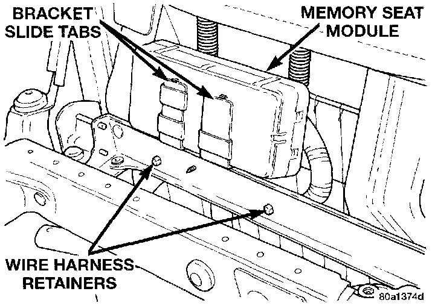

Power Seat Control Module: Service and Repair
REMOVAL1. Move the driver side power seat adjuster to the most raised and forward stop positions, if possible.
2. Remove the single screw that secures each of the two rear seat track covers to the rear of the seat tracks and remove the covers.
3. Remove the single screw that secures the rear of each of the two seat tracks to the floor pan.
4. Move the driver side power seat adjuster to the most rearward stop position, if possible.
5. Remove the single screw that secures the front of each of the two seat tracks to the floor pan.
6. Disconnect and isolate the battery negative cable.
7. Carefully tilt the seat back towards the outboard side of the vehicle.
Memory Seat Module Remove/Install:

8. Release the two retainers that secure the memory seat module wire harness to the inboard seat adjuster top rail.
9. Slide the memory seat module off of the mounting bracket slide tabs far enough to unplug the wire harness connectors.
10. Remove the module from under the seat cushion.
11. Reverse the removal procedures to install.
NOTE: Following the installation it will be necessary to initialize the memory seat module. This is done by moving each of the power seat adjuster motors (including the power recliner and power lumbar motors) through its full range of motion using the power seat switches. It is necessary for the memory seat module to learn the motor sensor values in each of the adjuster hard stop positions, so that the module can function properly.